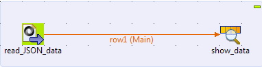
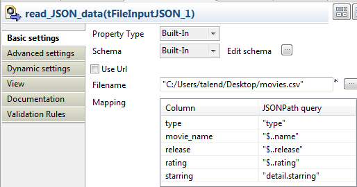
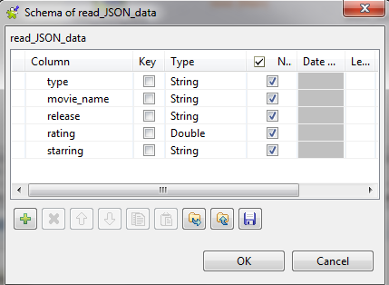
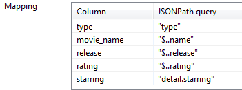

|
Component Family |
File | |
|
Function |
tFileInputJSON extracts JSON data from a file according to the JSONPath query. | |
|
Purpose |
tFileInputJSON extracts JSON data from a file according to the JSONPath query, then transferring the flat data to a file, a database table, etc. | |
|
Basic settings |
Property type |
Either Built-in or Repository. |
|
|
|
Built-in: No property data stored centrally. |
|
|
|
Repository: Select the repository file where the properties are stored. The fields that follow are completed automatically using the data retrieved. |
|
|
Schema and Edit Schema |
A schema is a row description, i.e. it defines the number of fields to be processed and passed on to the next component. The schema is either Built-in or stored remotely in the Repository. Click Edit Schema to make changes to the schema. Note that if you make changes, the schema automatically becomes built-in. |
|
|
|
Built-in: The schema will be created and stored locally for this component only. Related topic: see Talend Open Studio User Guide. |
|
|
|
Repository: The schema already exists and is stored in the Repository, hence can be reused in various projects and Job flowcharts. Related topic: see Talend Open Studio User Guide. |
|
|
Use URL |
Select this check box to retrieve data directly from the Web. URL: type in the URL path from which you will retrieve data. |
|
|
FIlename |
Name of the file from which you will retrieve data. |
|
|
Mapping |
Column: shows the schema defined in the Schema editor. JSONPath Query: specifies the JSON node that holds the desired data. For details about JSONPath expressions, go to http://goessner.net/articles/JsonPath/. |
|
Advanced settings |
Advanced separator (for numbers) |
Select this check box to modify the separators used for numbers: Thousands separator: define separators for thousands. Decimal separator: define separators for decimals. |
|
|
Encoding |
Select the encoding type from the list or select Custom and define it manually. This field is compulsory for DB data handling. |
|
|
tStatCatcher Statistics |
Select this check box to gather the Job processing metadata at a Job level as well as at each component level. |
|
Usage |
tFileInputJSON extracts JSON data from a file according to the JSONPath query, then transferring the flat data to a file, a database table, etc.. | |
|
Limitation |
n/a | |
In this scenario, tFileInputJSON reads the JSON data from a .csv file and tLogRow shows the flat data extracted.
The JSON data contains the brief information about the movie Brave heart.
Drop tFileInputJSON and tLogRow from the Palette onto the Job designer.
Rename tFileInputJSON as read_JSON_data and tLogRow as show_data.
Link the components using a Row > Main connection.

Double-click tFileInputJSON to open its Basic settings view:
Click the [...] button next to Edit schema to open the schema editor.
Click the [+] button to add five columns, namely type, movie_name, release, rating and starring, with the type of string except for the column rating, which is double.
Click OK to close the editor.
In the pop-up Propagate box, click Yes to propagate the schema to the subsequent components.

In the Filename field, fill in the path to the JSON file.
In this example, the JSON file is as follows:
{ "type": "Action Movie", "detail": { "movies": { "name": "Brave heart", "release": "1995", "rating": "5", }, "starring": "Mel Gibson" } }In the Mapping table, the schema automatically appears in the Column part. For each column, type in the JSONPath query to retrieve data from the JSON node under the JSONPath query part.
For the column type, enter the JSONPath query "type", which is the first node of the JSON data.
For columns movie_name, release and rating, enter the JSONPath queries "$..name", "$..release" and "$..rating" respectively.
Here, "$" stands for the root node relative to the nodes name, release and rating, namely detail. ".." stands for the recursive decent of the node detail, namely movies.
Therefore, the query is still valid if you replace "$..name" with "detail.movies.name".
For the column starring, enter the JSONPath query "detail.starring". Note that type and detail are two nodes of the same level in the hierarchy.
Double-click tLogRow to display the Basic settings view.

Select Table (print values in cells of a table) for a better display of the results.